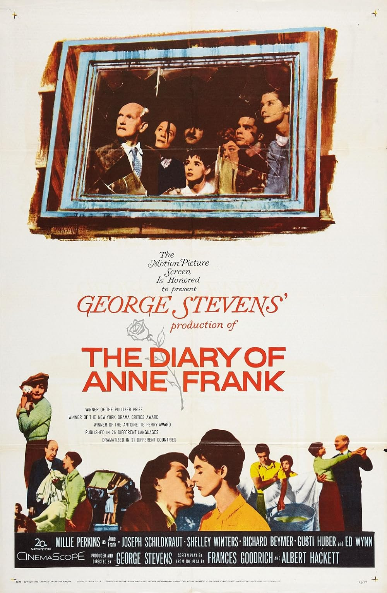

The Diary of Anne Frank
32nd Academy Awards
(Oscars 1960)
8 Nominations, 3 Awards
| Nominations | ||
|---|---|---|
| Category | Nominees | Result |
| Best Motion Picture | George Stevens | Nominated |
| Actor in a Supporting Role | Ed Wynn | Nominated |
| Actress in a Supporting Role | Shelley Winters | Won |
| Directing | George Stevens | Nominated |
| Cinematography (Black-and-White) | William C. Mellor | Won |
| Art Direction (Black-and-White) | George W. Davis, Lyle R. Wheeler, Stuart A. Reiss, and Walter M. Scott | Won |
| Costume Design (Black-and-White) | Charles LeMaire and Mary Wills | Nominated |
| Music (Music Score of a Dramatic or Comedy Picture) | Alfred Newman | Nominated |